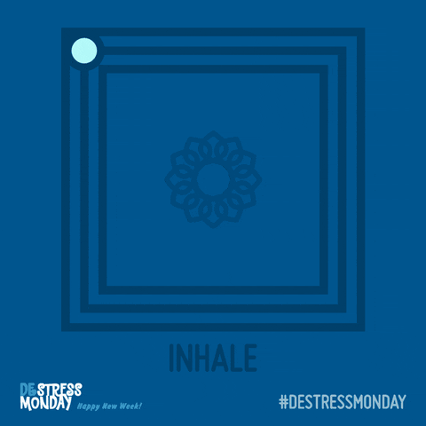

Resources
Resources are available if you are struggling with your mental health. Try the following:
Your local state government may provide options within your state. For Massachusetts, visit this site.
The National Institute of Mental Health also provides a comprehensive list of resources at this site.
Consider journaling to keep track of your daily feelings and progress. Read more here.
Positive thought can be extremely powerful. Try some of these options for positive affirmations.
Self-care can also have strong effects on your mental health. Prioritize taking care of yourself with these tips:
Sleep is important. Improve your sleep with these tips.
Nutrition is also important for mental health. Learn to fuel your brain at this website.
Helplines
If you are currently in an emergency or suicide crisis, call 988 for someone to talk to or 911 for immediate medical help.
SAMHSA is a national organization that provides a helpline 24/7, free of charge, for substance abuse disorders and mental health crises. Call 1(800)-662-4357 for help.
Feeling stressed? Try this exercise!
